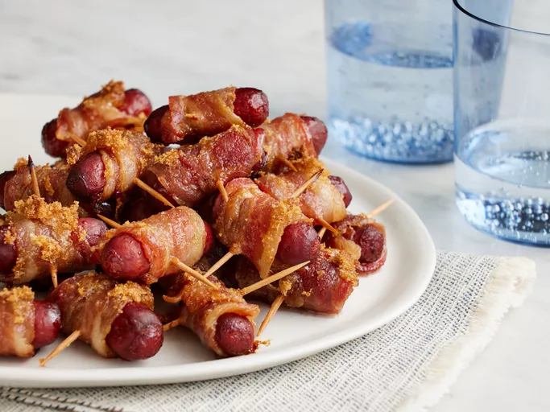

Home
Delicious Bacon Wrapped Smokies

How to Make Bacon-Wrapped Smokies
Bacon-wrapped smokies will liven up any party, from big tailgates to cozy family get-togethers. This recipe for bacon-wrapped smokies couldn't be easier to make with just a few ingredients!
These bacon-wrapped smokies are a salty-sweet party hit. Just three ingredients (bacon, cocktail wieners, brown sugar) and toothpicks. Wrap each wiener in bacon, secure with a toothpick, sprinkle with brown sugar, and bake until crispy. Pro tip: Keep the bacon cold for easier wrapping. Serve with ranch or BBQ sauce for dipping. Prep ahead—they keep in the fridge for 3 days or freeze well. Fans call them “meat candy” and swear they vanish fast. Easy to double for big crowds.
Ingredients:
- 1 pound sliced bacon, cut into thirds
- 1 (14 ounce) package beef cocktail wieners
- toothpicks
- ¾ cup brown sugar, or to taste
Steps
- Gather all ingredients.
- Preheat the oven to 325 degrees F (165 degrees C). Line a large, rimmed baking sheet with parchment paper or aluminum foil.
- Wrap each cocktail wiener with a piece of bacon; secure with a toothpick. Place bacon-wrapped wieners on the prepared baking sheet.
- Evenly sprinkle brown sugar over the tops of the bacon-wrapped wieners.
- Bake in the preheated oven until bacon is crisp and sugar is bubbly, about 40 minutes.
- Serve immediately, or place in a slow cooker set on Low to keep warm.